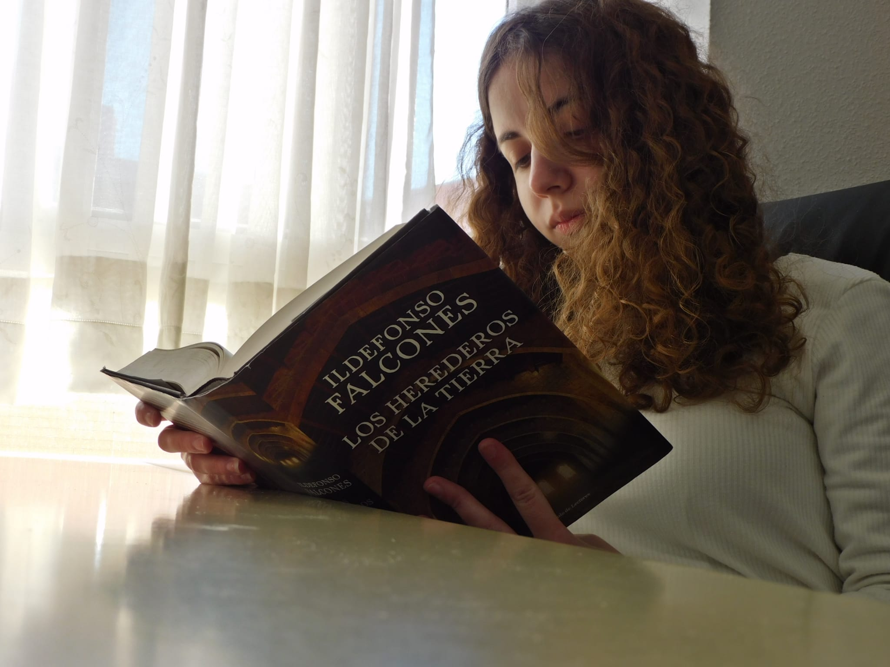
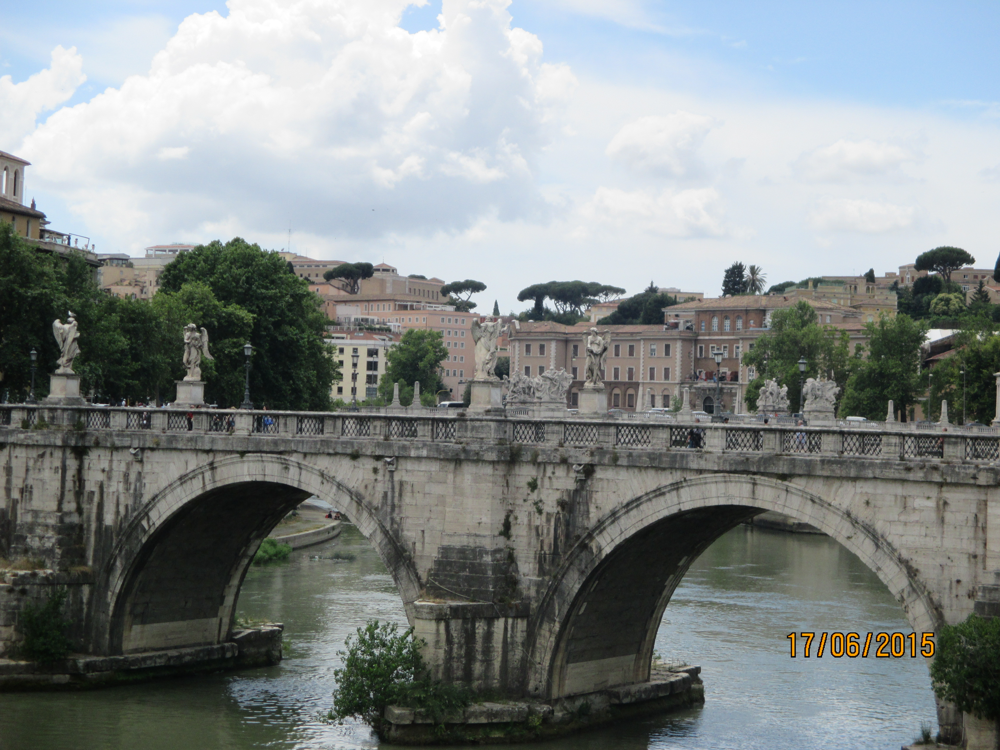
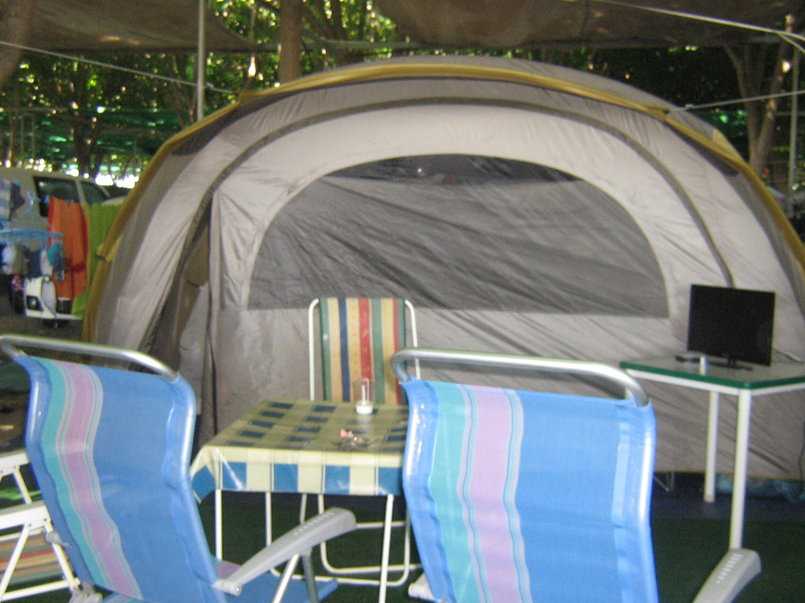
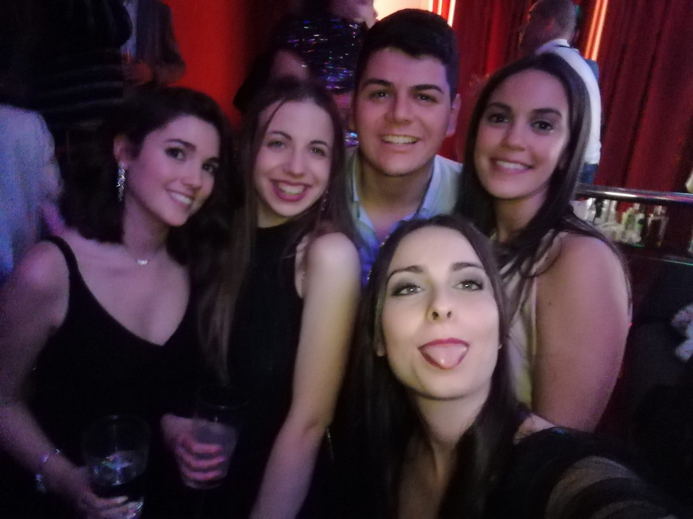
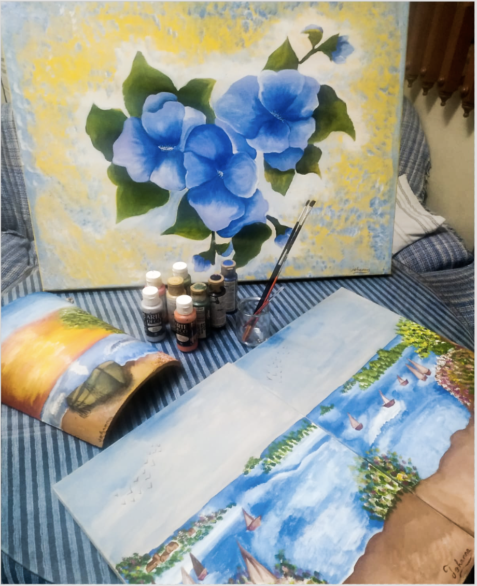

Aficiones

Leer

Viajar

Ir de acampada

Pasar tiempo con amigos

Fotografía

Pintar
Rol en el proyecto
Responsable de calidad
Athena Tech
Como responsable de calidad me he encargado de revisar cada uno de los entregables al finalizar cada sprint, comprobando su correcto funcionammiento, correspondencia con los requisitos que se acordaron con el cliente y el cumplimiento de los estándares para la gestión de incidencias ( ISO/ITIL 20000). En cada uno de ellos he realizado un testeo de la aplicación y registrado en gitlab mejoras y errores a solucionar en el siguiente sprint. Además de revisar la documentación y registrar las no conformidades en gitlab.

Quality is never an accident.It is always the result of intelligent effort.
Octubre 2020 - Actualidad
Conclusión sobre gestión de proyectos
Me ha parecido una asignatura muy interesante puesto que nos ha acercado a un entorno laboral real. Hemos aprendido de forma práctica el trabajo de cada rol, lo cual me parece bastante positivo a la hora de salir al entorno laboral, puesto que creo que es fundamental a la hora de buscar un puesto de trabajo. Además he aprendido nuevas herramientas que no conocía.
Gitlab , que aunque al principio no le dabamos mucha importancia, me he dado cuenta de que tiene muchos beneficios a la hora de desarrollar un proyecto.
Wordpress, la cual tenía bastante interés por aprender pero no había tenido tiempo de ello
Como conclusión de la asignatura me llevo, una mayor importancia a la organización, que ya hemos puesto en práctica en otras asignaturas en la que realizamos proyectos en paralelo y el aprendizaje de una nueva tecnología. Además de una muy buena experiencia de trabajo en equipo a pesar de los inconvenientes de falta de tiempo debido al trabajo y otras asignaturas. Todo es mejorable, y hay muchas cosas que podríamos haber hecho mucho mejor, pero creo que la forma de enfocar el proyecto ha sido un buen comienzo para formar una buena base a la hora de gestionar proyectos.
Creación de la página
Para la creación de esta página he utilizado una plantilla de Start Bootstrap, de la que he modificado mediante Bootstrap, CSSy HTML.
Lenguajes de programación y herramientas